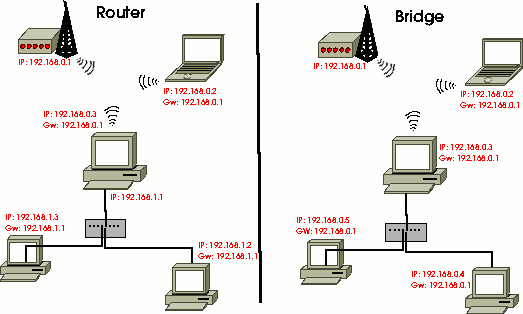

Netzwerkbrücke
Dieser Artikel wurde für die folgenden Ubuntu-Versionen getestet:
Ubuntu 16.04 Xenial Xerus
Artikel für fortgeschrittene Anwender
Dieser Artikel erfordert mehr Erfahrung im Umgang mit Linux und ist daher nur für fortgeschrittene Benutzer gedacht.
Zum Verständnis dieses Artikels sind folgende Seiten hilfreich:
Eine Netzwerkbrücke (engl. bridge) ist ein Computer bzw. Gerät, dass zwei physikalische Netzwerke zu einem gemeinsamen zusammenschließt. Im Gegensatz zu einem Router hat eine Bridge eine gemeinsame IP-Adresse für alle zusammengeschlossenen Schnittstellen, und die IPs der angeschlossenen Rechner liegen alle im selben logischen Netzwerk. Auch Broadcast-, Arp- und sonstige Pakete, die ein Router normalerweise blockiert, können frei über eine Bridge laufen.
Eine praktische Anwendung für eine Bridge ist der Zusammenschluss verschiedener Netze, die unterschiedliche Transportmedien nutzen, z.B. LAN und WLAN.
Achtung!
Leider funktioniert das nicht mit allen WLAN-Karten. Um Bridging betreiben zu können, muss der Treiber in der Lage sein, Pakete mit unterschiedlichen MAC-Adressen über ein und dieselbe Schnittstelle zu versenden. Das macht die Firmware einiger Karten aber nicht mit. (Siehe hier  .)
.)
Prism- und Atheros-Karten sollen angeblich funktionieren. Intel Centrino (ipw2200) funktioniert leider definitiv nicht. Wessen Chipsatz diesen Stunt nicht kann, der kann sich nur entweder eine neue WLAN-Karte besorgen oder statt einer Bridge einen Router bauen.

Man kann auf einer Bridge auch Paketfilter einsetzen, und damit den freien Datenverkehr wieder einschränken. Um logistisch unabhängige Netze miteinander zu verbinden, ist aber doch ein Router die bessere Wahl.
Experten-Info:
Selbstverständlich ist es auch möglich, mehrere Brücken aus unterschiedlichen Schnittstellen zusammenzustellen und zwischen diesen dann zu routen.
Achtung!
Eine Bridge ist kein Gateway, sondern leitet den gesamten Verkehr automatisch nach allen Seiten weiter (Vergleichbar mit einem Hub). Auf den Rechnern im Netzwerk sollte deswegen nirgendwo die Bridge als Gateway eingetragen werden, sondern der zugehörige Router, auch wenn er netzwerktopologisch hinter der Bridge liegt.
Paket installieren¶
Folgendes Paket muss installiert [1] werden:
bridge-utils
 mit apturl
mit apturl
Paketliste zum Kopieren:
sudo apt-get install bridge-utils
sudo aptitude install bridge-utils
Einrichtung¶
Eine Bridge kann relativ einfach über die Datei /etc/network/interfaces [4] eingerichtet werden [3]. Im großen und ganzen funktioniert die Deklaration einer Bridge dort wie die herkömmlicher Schnittstellen auch, abgesehen davon, dass Bridge-Interfaces mit br beginnen und es ein paar spezielle Zusatzoptionen gibt. Die Parameter müssen natürlich an die lokalen Gegebenheiten angepasst werden:
auto br0
iface br0 inet static
address 192.168.4.2
netmask 255.255.255.0
gateway 192.168.4.1
bridge_ports eth0 wlan0
bridge_fd 5
bridge_stp no # unter Umständen auf 'yes' setzen - s.u.Die Option bridge_ports ist die wichtigste und dient zur Auflistung aller Netzwerkschnittstellen, die zur Bridge zusammengefasst werden. Alternativ möglich ist auch das Schlüsselwort all. Um Firewire-Schnittstellen, Loopback und ähnliche potentielle Überraschungen als Bridge-Mitglieder zu vermeiden, empfiehlt sich diese Option aber nicht. Wenn man nur ein rein internes Netzwerk erstellen will darf dieser Parameter nicht weggelassen werden, da sonst die Bridge nicht automatisch angelegt wird, sondern ist auf none zu stellen.
Die Option bridge_fd ist ein Timeout-Wert bei der Erstellung der Brücke. Die standardmäßigen 15 Sekunden sind meist unnötig lang und können eigentlich problemlos auf 5 Sekunden verkürzt werden. Nur wenn es dabei zu Fehlern kommt, sollte man den Wert wieder anheben.
bridge_stp ist ein Protokoll, das Zirkelschlüsse vermeiden und Wege im LAN optimieren soll. Wer mehrere Bridges und/oder kreisförmige LAN-Konstruktionen verwendet, sollte es auf jeden Fall aktivieren. Alle anderen können das deaktivieren.
Experten-Info:
Es gibt noch eine Handvoll weiterer Tuning-Parameter für Bridges. Es sei hiermit auf die Datei /usr/share/doc/bridge-utils/README.Debian.gz verwiesen sowie auf die Manpage des Programms brctl.
Nach einem beherzten sudo ifup br0 [2] sollte die Brücke jetzt funktionieren, was man mit den Befehlen ifconfig und brctl show überprüfen kann:
$ ifconfig
br0 Protokoll:Ethernet Hardware Adresse 00:0F:3D:57:BD:E7
inet Adresse:192.168.4.2 Bcast:192.168.4.255 Maske:255.255.255.0
inet6 Adresse: fe80::20f:3dff:fe57:bde7/64 Gültigkeitsbereich:Verbindung
UP BROADCAST RUNNING MULTICAST MTU:1500 Metric:1
RX packets:10 errors:0 dropped:0 overruns:0 frame:0
TX packets:15 errors:0 dropped:0 overruns:0 carrier:0
Kollisionen:0 Sendewarteschlangenlänge:0
RX bytes:892 (892.0 b) TX bytes:1139 (1.1 KiB)
[...]
$ brctl show
bridge name bridge id STP enabled interfaces
br0 8000.000f3d57bde7 no wlan0
eth0 Achtung!
Man beachte, dass die ursprünglichen Interfaces nach dem Abbau der Brücke mit sudo ifdown br0 ihre ursprünglichen IP-Adressen nicht automatisch zurückerhalten. Wer also nach einem "Brückentest" nicht mehr ins Netz kommt, muss die entsprechenden Schnittstellen mit Hilfe von ifdown und ifup auf die vorherigen Werte zurücksetzen.
Für eine dauerhafte Lösung empfiehlt es sich, die Brücke in der interfaces-Datei mit einer auto-Zeile zu versehen und die auto-Zeilen der beteiligten Schnittstellen auszukommentieren.
Konflikt mit NetworkManager¶
Sollte sich der NetworkManager nicht von seiner Aufgabe abbringen lassen, kann man mit diesem einfachen Workaround die beteiligten interfaces in /etc/network/interfaces mit auto eth0 und iface eth0 inet manual auf manuell umschalten, und wer nicht auf die GUI-Netzwerkverwaltung angewiesen ist, der kann die Pakete network-manager und network-manager-gnome einfach entfernen.
Brücken in drahtlose Netze¶
Achtung!
Diese Funktion des Kernels wurde deaktiviert. Soll ein WLAN-Adapter in eine Brücke integriert werden, so muss sich dieser im Master-Modus befinden! Die ist so nur in Kombination mit hostapd und einer Konfiguration als WLAN Router möglich. Alternative wäre den Kernel mit der entsprechenden Option selbst zu kompilieren.
Wer WLANs in die Brücke mit einbeziehen will, der muss bedenken, dass der Bridge-Treiber keine Ahnung von WLAN-ESSIDs, WPA-Schlüsseln, etc. hat. Das Wireless Interface muss also vor dem Brückenbau mit dem Access Point verbunden sein. Das kann man erreichen, indem man einen ganz normalen, funktionierenden WLAN-Block in die interfaces-Datei [4] einträgt, jedoch ohne ein auto-Statement. Jetzt kann man im Abschnitt des Bridge-Devices folgende Zeile ergänzen (Gerätenamen bei Bedarf anpassen):
pre-up ifup wlan0
Hinweis:
Für madwifi hat es mit diesem Befehl nicht funktioniert. Die Bridge wird zwar initialisiert, aber ohne das athX-Interface.
Geklappt hat für das reine Initialisieren der Karte ohne Verschlüsselung:
pre-up iwconfig ath0 essid WLAN
mit einfacher WEP-Verschlüsselung dann...
pre-up iwconfig ath0 essid WLAN key s:wepkey
usw. pre-up kann mehrfach vorkommen...
Einsatzszenarien¶
Neben der o.a. Möglichkeit, LAN und WLAN zu einem gemeinsamen Netz zu verbinden, warten u.a. folgende Konfigurationen darauf, getestet zu werden:
Experten-Info:
Stealth Firewall
In dieser Konfiguration wird die Brücke ohne IP-Adresse konstruiert, dafür läuft ein Paketfilter und evtl. ein Network Intrusion Detection System wie snort. Diese Firewall kann nur sehr schwer angegriffen werden. Oft entgeht dem Angreifer ihre Existenz sogar ganz.VPN erweitern
Mehrere Rechner des lokalen Netzes in ein Virtual Private Network einbinden.Zwei Standorte zusammenschließen
An beiden Standorten existiert je eine Bridge. Diese sind durch eine schnelle WAN-Verbindung verbunden.(VPN)
- Erstellt mit Inyoka
-
 2004 – 2017 ubuntuusers.de • Einige Rechte vorbehalten
2004 – 2017 ubuntuusers.de • Einige Rechte vorbehalten
Lizenz • Kontakt • Datenschutz • Impressum • Serverstatus -
Serverhousing gespendet von